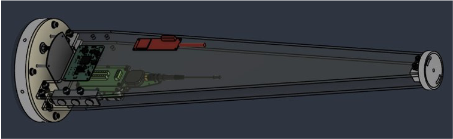

IN PROGRESS
Sounding Rocket Avionics Bay
CU Sounding Rocket Laboratory · Avionics Structures Lead
Leading avionics-bay structural development for a space-shot sounding rocket. Concept Design Review and PCB modal analysis are complete; full vehicle structural analysis awaits finalized loads and boundary conditions.
Scope and analysis status
- Completed
- Concept Design Review and PCB modal analysis.
- Current scope
- Sled structure, PCB mounting, fasteners, and isolation.
- Next analysis
- Full vehicle structural analysis after vehicle loads and boundary conditions are finalized.